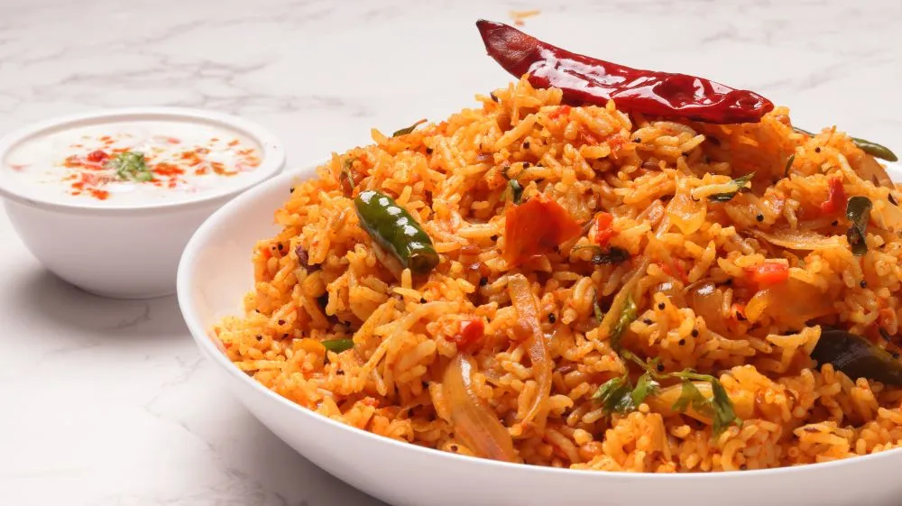

Tomato Rice
Home

Description
Tomato rice is a South Indian style spicy and tangy rice dish made with tomatoes, spices, and cooked rice.
It is quick to prepare and very flavorful.
Ingredients
- 1 cup cooked rice
- 3 ripe tomatoes (chopped)
- 1 onion (sliced)
- 2 green chilies
- 1 tsp ginger-garlic paste
- 2 tbsp oil
- 1/2 tsp mustard seeds
- 1/2 tsp cumin seeds
- Curry leaves
- Turmeric powder
- Red chili powder
- Salt to taste
Steps
- Heat oil in a pan.
- Add mustard seeds and cumin seeds, let them splutter.
- Add curry leaves, green chilies, and onions. Sauté until soft.
- Add ginger-garlic paste and cook for a minute.
- Add chopped tomatoes, turmeric, chili powder, and salt.
- Cook until tomatoes become soft and mushy.
- Add cooked rice and mix gently so spices coat the rice.
- Cook for 2–3 minutes and turn off the heat.
- Serve hot with curd or pickle.